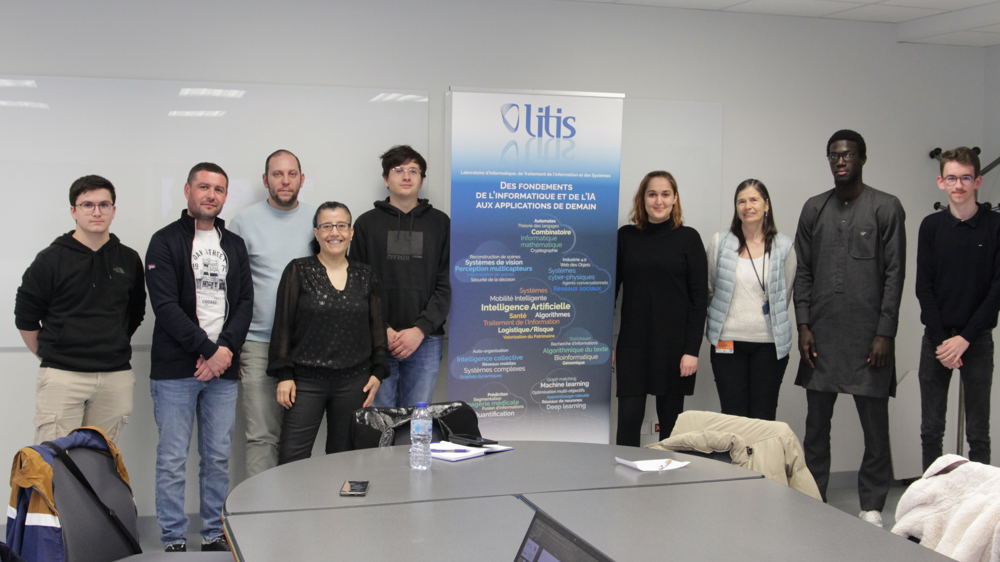

Tâches communes
Compréhension du sujet et première recherche
Nous avons pris le temps d’analyser la demande qui nous a été faite et fait des recherches sur des sites existants comme solidarité-numérique et l’AGEFIPH, ce qui a aidé à constituer notre charte graphique.
Charte Graphique
Avec Dylan, nous avons décidé des couleurs et typographies du site, tandis que Florian s'occupait du logo.
Gestion de projet
Nous avons établi une gestion de projet pour suivre l'avancement et organiser les tâches à réaliser.
Maquette du site
La maquette du site a été créée sur Figma, avec des versions pour ordinateurs et téléphones.
Photographie
Des séances de photographie ont été réalisées lors de réunions et événements pour enrichir le site et nos supports de communication.
